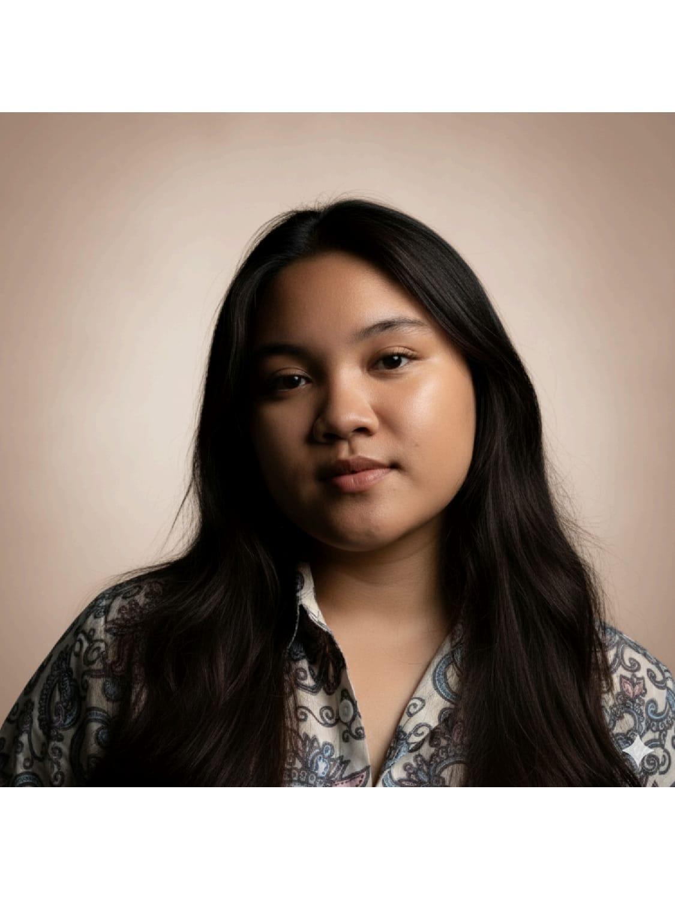
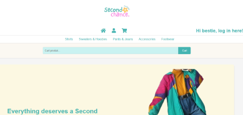
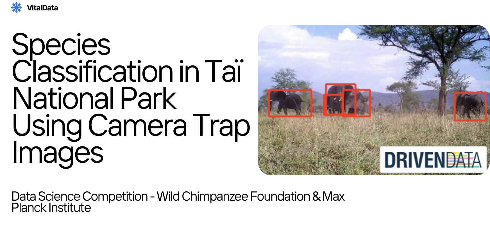
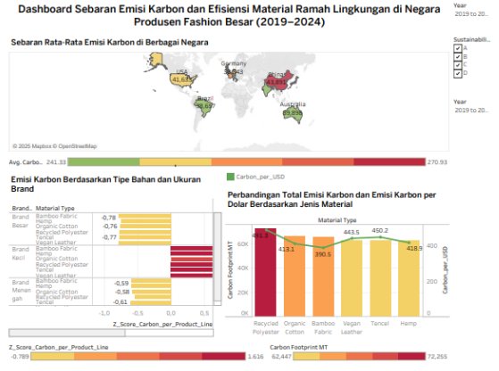
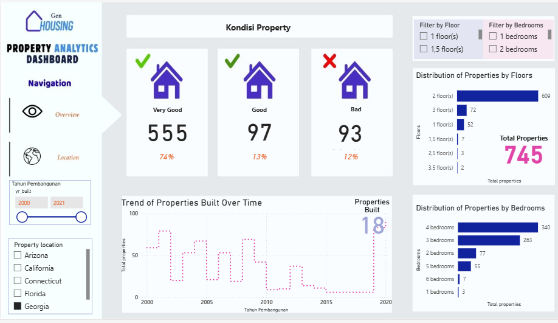
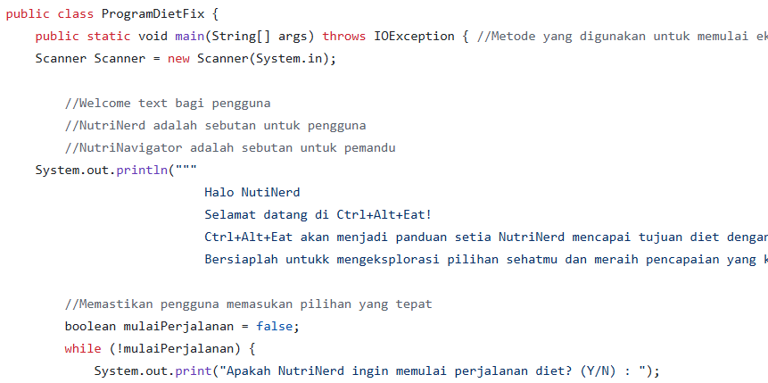
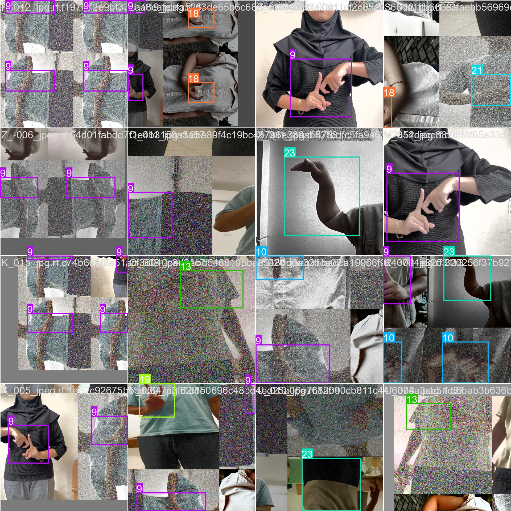
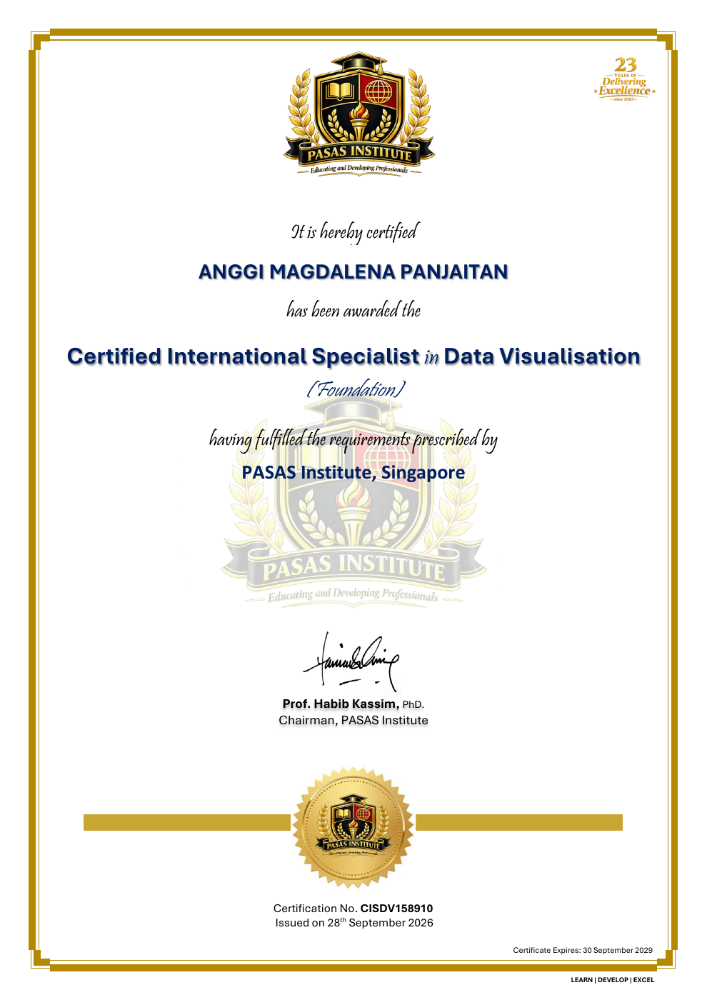
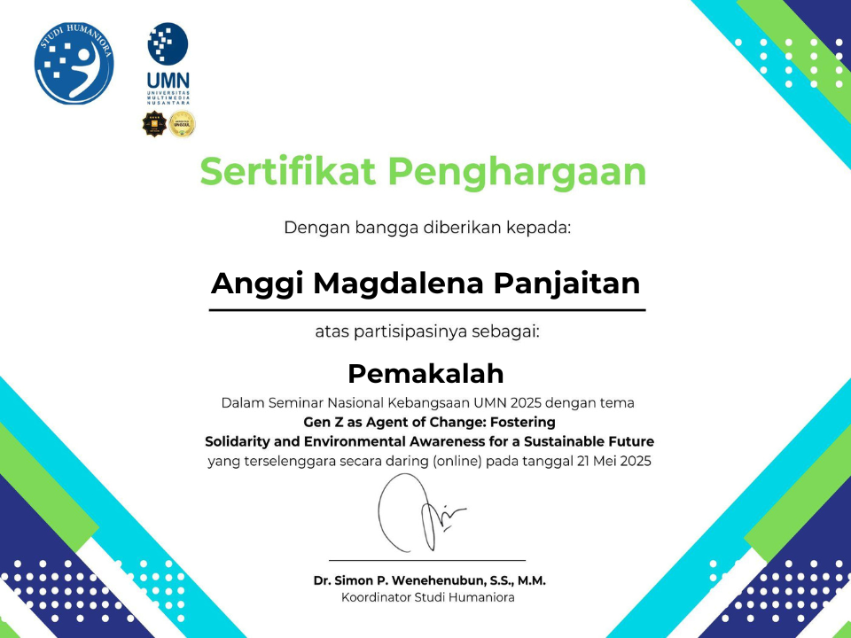
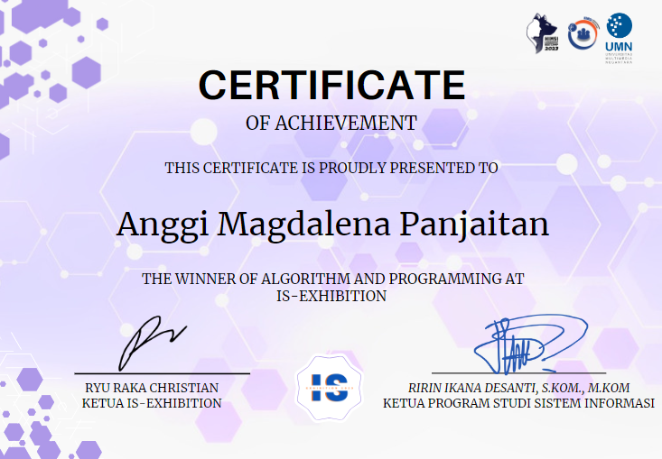

BACHELOR’S DEGREE
Universitas Multimedia Nusantara
Bachelor of Information Systems
2023 – Expected graduation: February 2027
GPA3.84 / 4.00
DATA & BUSINESS INTELLIGENCE
Open to full-time & freelance opportunities
Hi, I’m Anggi Magdalena Panjaitan.
Currently interning at KPN Corp as an IT Engineer Intern (Business Intelligence & Analytics).
Internship expected to end in February 2027.

01 / EDUCATION
Bachelor of Information Systems
2023 – Expected graduation: February 2027
GPA3.84 / 4.00
EARLIER EDUCATION
High School Diploma · 2017 – 2020
Avg Score: 8.5/10.0 | Focus on Science
02 / ACHIEVEMENTS
Multimedia Nusantara University - Information System Exhibition
February 2024
Group-based internal competition held by the Information Systems Student Association. The project involved developing CTRL+EAT, a healthy lifestyle system using Java, featuring food recommendations based on daily calorie needs calculated from BMI.
DrivenData Competition
May 2025
Achieved strong performance in a wildlife conservation image classification challenge by developing and fine-tuning deep learning models (DeiT, ViT, EfficientNet). The EfficientNet model achieved a log loss of 2.6807, ranking the team in the top 17% of 1,520 teams while classifying seven rare animal species.
03 / WORK EXPERIENCE
KPN Corp South Jakarta, Indonesia
Business Intelligence & Analytics
Expected completion: February 2027
1,000+IT assets supported with improved service management and asset visibility.
04 / PROJECTS

A dynamic thrift e-commerce website built using PHP, React.js, and SQL to support item listings, user authentication, and transaction management.

Built an AI model to classify wildlife species from camera trap images for a Data Science Competition by the Wild Chimpanzee Foundation & Max Planck Institute.

Designed an interactive Tableau dashboard to analyze the adoption of eco-friendly materials and labeling in major fashion-producing countries.

Developed an interactive Power BI dashboard using SQL and Excel to analyze 1,000+ property records, explore price trends, and identify key factors influencing pricing.

Java-based system designed to promote a healthy lifestyle by providing daily nutritional intake recommendations.

Trained an object detection model using 473 images across 19 BISINDO hand sign classes. Selected as Best Project by course lecturer with stable detection performance for static hand signs.
05 / CERTIFICATES

PASAS Institute, Singapore
Issued:
Expires:
Credential ID: CISDV158910

Universitas Multimedia Nusantara
Issued: May 2025

Universitas Multimedia Nusantara
Issued: February 2024
06 / WHAT’S NEXT?
I'm always open to discussing new opportunities, creative projects, or just having a friendly chat about technology and innovation.